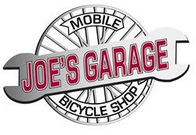
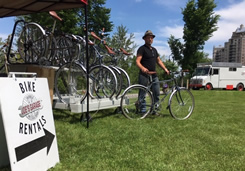
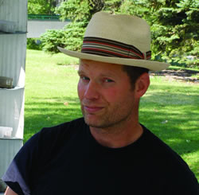

Serving Calgary's urban cyclists since 2007
Maintenance, Repairs and
Bike Rentals
Home | About Joe's Garage | Rentals | Prices | Photos | Reviews
403-874-JOES (5637)
joe@joesgarage.mobi
Text me at 403-874-5637 to reserve a spot or rental.

Rental options include child bikes, trikes, baby trailers, and tandem bikes.
Open year round, weather permitting, Joe's Garage is at its licenced location
on the Bow River pathway in central Calgary on the south side of the river just east of the 10th Street LRT bridge.
See map


Joe
© Copyright 2010-2022, Joe's Garage, Calgary, Alberta, Canada